Individual / Grand-average visual inspection
Topographies across time
if (graph == 1) {
# Change from wide to long format
ga_topo_long = gather(ga_topo_wide, electrode, amplitude, Fp1:Oz, factor_key = TRUE)
# Topoplots
# Rename A1/A2
names(ga_topo_long)[names(ga_topo_long) == "A1"] <- "TP9"
names(ga_topo_long)[names(ga_topo_long) == "A2"] <- "TP10"
# Electrode locations
ga_topo_long = electrode_locations(ga_topo_long, electrode = "electrode", drop = FALSE,
montage = NULL)
# Select 1st time window
ga_topo_tw1 = ga_topo_long[(ga_topo_long$time >= 0) & (ga_topo_long$time <= 100),
]
# Plot topoplot for first time window
ga_topo_tw1_plot = ggplot(ga_topo_tw1, aes(x = x, y = y, fill = amplitude, label = electrode)) +
ggtitle("0-100ms") + geom_topo(grid_res = 300, interp_limit = "head", chan_markers = "text",
chan_size = 2, head_size = 1) + scale_fill_distiller(palette = "RdBu", limits = c(-130,
200)) + theme_void() + coord_equal() + theme(legend.position = "none")
# Select 2nd time window
ga_topo_tw2 = ga_topo_long[(ga_topo_long$time >= 100) & (ga_topo_long$time <=
200), ]
# Plot topoplot for first time window
ga_topo_tw2_plot = ggplot(ga_topo_tw2, aes(x = x, y = y, fill = amplitude, label = electrode)) +
ggtitle("100-200ms") + geom_topo(grid_res = 300, interp_limit = "head", chan_markers = "text",
chan_size = 2, head_size = 1) + scale_fill_distiller(palette = "RdBu", limits = c(-130,
200)) + theme_void() + coord_equal() + theme(legend.position = "none")
# Select 3rd time window
ga_topo_tw3 = ga_topo_long[(ga_topo_long$time >= 200) & (ga_topo_long$time <=
300), ]
# Plot topoplot for first time window
ga_topo_tw3_plot = ggplot(ga_topo_tw3, aes(x = x, y = y, fill = amplitude, label = electrode)) +
ggtitle("200-300ms") + geom_topo(grid_res = 300, interp_limit = "head", chan_markers = "text",
chan_size = 2, head_size = 1) + scale_fill_distiller(palette = "RdBu", limits = c(-130,
200)) + theme_void() + coord_equal() + theme(legend.position = "none")
# Select 4th time window
ga_topo_tw4 = ga_topo_long[(ga_topo_long$time >= 300) & (ga_topo_long$time <=
400), ]
# Plot topoplot for first time window
ga_topo_tw4_plot = ggplot(ga_topo_tw4, aes(x = x, y = y, fill = amplitude, label = electrode)) +
ggtitle("300-400ms") + geom_topo(grid_res = 300, interp_limit = "head", chan_markers = "text",
chan_size = 2, head_size = 1) + scale_fill_distiller(palette = "RdBu", limits = c(-130,
200)) + theme_void() + coord_equal() + theme(legend.position = "none")
# Select 5th time window
ga_topo_tw5 = ga_topo_long[(ga_topo_long$time >= 400) & (ga_topo_long$time <=
500), ]
# Plot topoplot for first time window
ga_topo_tw5_plot = ggplot(ga_topo_tw5, aes(x = x, y = y, fill = amplitude, label = electrode)) +
ggtitle("400-500ms") + geom_topo(grid_res = 300, interp_limit = "head", chan_markers = "text",
chan_size = 2, head_size = 1) + scale_fill_distiller(palette = "RdBu", limits = c(-130,
200)) + theme_void() + coord_equal() + theme(legend.position = "none")
# Select 6th time window
ga_topo_tw6 = ga_topo_long[(ga_topo_long$time >= 500) & (ga_topo_long$time <=
600), ]
# Plot topoplot for first time window
ga_topo_tw6_plot = ggplot(ga_topo_tw6, aes(x = x, y = y, fill = amplitude, label = electrode)) +
ggtitle("500-600ms") + geom_topo(grid_res = 300, interp_limit = "head", chan_markers = "text",
chan_size = 2, head_size = 1) + scale_fill_distiller(palette = "RdBu", limits = c(-130,
200)) + theme_void() + coord_equal() + theme(legend.position = "none")
# Display plots
fig_ga_topo = cowplot::plot_grid(ga_topo_tw1_plot, ga_topo_tw2_plot, ga_topo_tw3_plot,
ga_topo_tw4_plot, ga_topo_tw5_plot, ga_topo_tw6_plot, ncol = 3, rel_widths = c(1,
1, 1, 1, 1, 1))
fig_ga_topo
}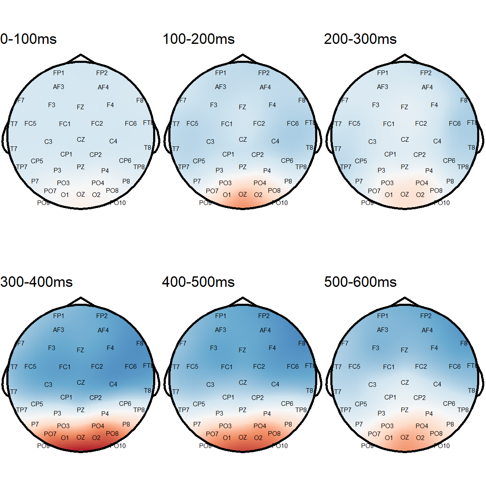
Topographies specific to time windows of P1, N170, P3
if (graph == 1) {
# Change from wide to long format
ga_topo_long = gather(ga_topo_wide, electrode, amplitude, Fp1:Oz, factor_key = TRUE)
# Topoplots
# Rename A1/A2
names(ga_topo_long)[names(ga_topo_long) == "A1"] <- "TP9"
names(ga_topo_long)[names(ga_topo_long) == "A2"] <- "TP10"
# Electrode locations
ga_topo_long = electrode_locations(ga_topo_long, electrode = "electrode", drop = FALSE,
montage = NULL)
# Select P1 time window
ga_topo_P1 = ga_topo_long[(ga_topo_long$time >= 80) & (ga_topo_long$time <= 120),
]
# Plot topoplot for P1
ga_topo_P1_plot = ggplot(ga_topo_P1, aes(x = x, y = y, fill = amplitude, label = electrode)) +
ggtitle("P1") + geom_topo(grid_res = 300, interp_limit = "head", chan_markers = "text",
chan_size = 2, head_size = 1) + scale_fill_distiller(palette = "RdBu", limits = c(-110,
180)) + theme_void() + coord_equal() +
theme(legend.position = "none")
# Select N170 time window
ga_topo_N170 = ga_topo_long[(ga_topo_long$time >= 160) & (ga_topo_long$time <=
200), ]
# Plot topoplot for N170
ga_topo_N170_plot = ggplot(ga_topo_N170, aes(x = x, y = y, fill = amplitude,
label = electrode)) + ggtitle("N170") + geom_topo(grid_res = 300, interp_limit = "head",
chan_markers = "text", chan_size = 2, head_size = 1) + scale_fill_distiller(palette = "RdBu",
limits = c(-50, 80)) + theme_void() + coord_equal() +
theme(legend.position = "none")
# Select P3 time window
ga_topo_P3 = ga_topo_long[(ga_topo_long$time >= 300) & (ga_topo_long$time <=
500), ]
# Plot topoplot for P3
ga_topo_P3_plot = ggplot(ga_topo_P3, aes(x = x, y = y, fill = amplitude, label = electrode)) +
ggtitle("P3") + geom_topo(grid_res = 300, interp_limit = "head", chan_markers = "text",
chan_size = 2, head_size = 1) + scale_fill_distiller(palette = "RdBu", limits = c(-120,
190)) + theme_void() + coord_equal() +
theme(legend.position = "none")
# Display plots
fig_ga_topo_erps = cowplot::plot_grid(ga_topo_P1_plot, ga_topo_N170_plot, ga_topo_P3_plot,
ncol = 3, rel_widths = c(1, 1, 1))
fig_ga_topo_erps
}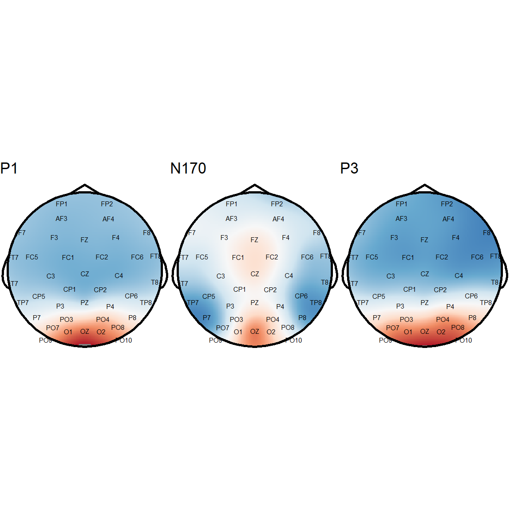
Grand average across all conditions, participants and ROI
if (graph == 1) {
# Change from wide to long format
ga_traj_long = gather(ga_traj_wide, electrode, amplitude, P7:Oz, factor_key = TRUE)
# Plot data
ggplot(ga_traj_long, aes(time, amplitude)) + ggtitle("Grand average across ROI") +
theme(panel.background = element_blank(), panel.border = element_rect(colour = "grey",
fill = NA, size = 2), axis.title.y = element_text(margin = margin(t = 0,
r = 20, b = 0, l = 0)), legend.text = element_text(size = 7), legend.key = element_rect(fill = "white")) +
stat_summary(fun.y = mean, geom = "line", size = 1, linetype = "solid") +
scale_color_discrete(guide = guide_legend(override.aes = list(color = "white"))) +
labs(x = "\ntime (ms)", y = expression(paste("Mean amplitude across ROI [",
mu, "V]")), colour = "") + theme(legend.position = "bottom") + coord_cartesian(ylim = c(-40,
150), xlim = c(-100, 600)) + scale_y_continuous(breaks = seq(-40, 150, 20)) +
scale_x_continuous(breaks = seq(-100, 600, 100)) + geom_vline(xintercept = 0,
linetype = "dashed", colour = "grey") + geom_hline(yintercept = 0, linetype = "dashed",
colour = "grey")
}
Averaged ERPs for P1, N170 (left/right) and P3
if (graph == 1) {
# Plot data
ggplot(P1_P3_traj, aes(time, amplitude)) + theme(panel.background = element_blank(),
panel.border = element_rect(colour = "grey", fill = NA, size = 2), axis.title.y = element_text(margin = margin(t = 0,
r = 20, b = 0, l = 0))) + stat_summary(fun.y = mean, geom = "line", size = 1,
linetype = "solid", aes(colour = cond)) + scale_colour_manual(values = ZE_ERP_col) +
ggtitle("P1 & P3") + theme(legend.position = "bottom") + labs(x = "\ntime (ms)",
y = expression(paste("Mean amplitude across ROI [", mu, "V]")), colour = "") +
coord_cartesian(ylim = c(-4, 10), xlim = c(-100, 600)) + scale_y_continuous(breaks = seq(-4,
10, 2)) + scale_x_continuous(breaks = seq(-100, 600, 100)) + geom_vline(xintercept = 0,
linetype = "dashed", colour = "grey") + geom_hline(yintercept = 0, linetype = "dashed",
colour = "grey")
}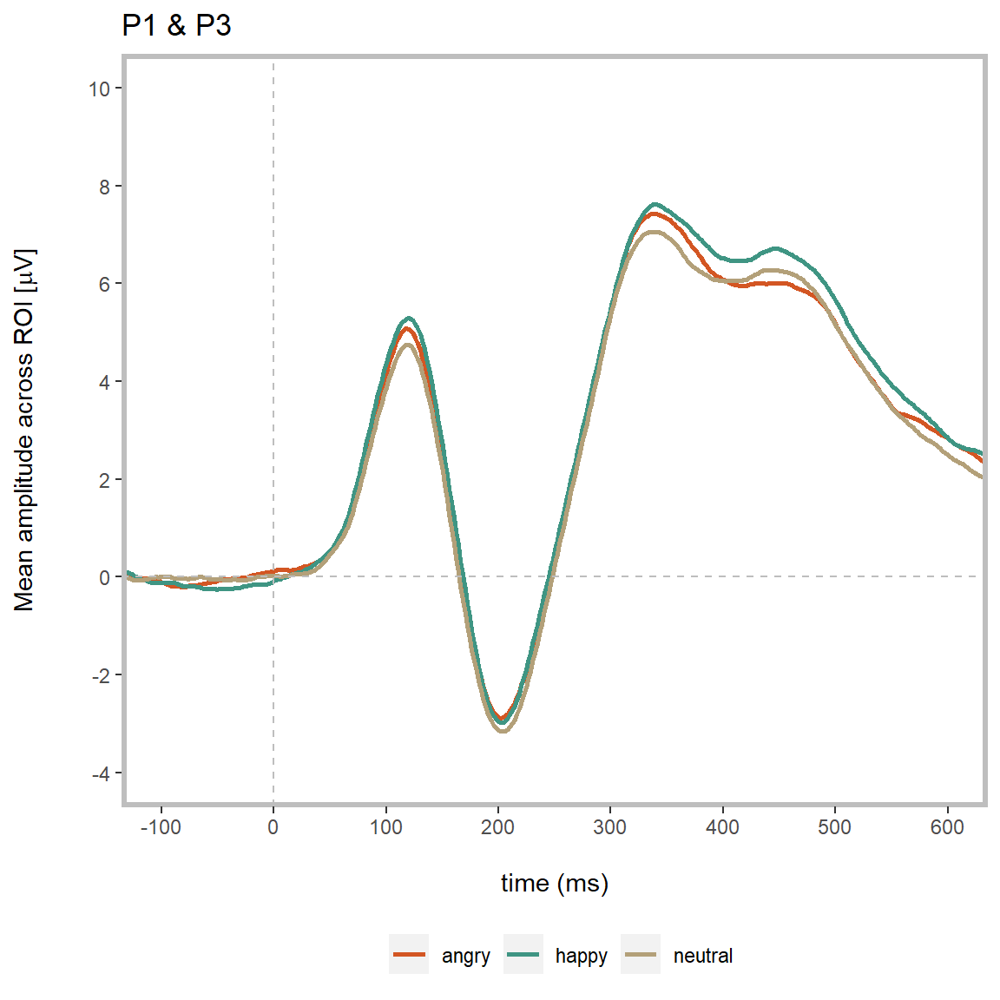
if (graph == 1) {
# N170 left hemisphere
N170_l_traj_plot = ggplot(N170_l_traj, aes(time, amplitude)) + theme(panel.background = element_blank(),
panel.border = element_rect(colour = "grey", fill = NA, size = 2), axis.title.y = element_text(margin = margin(t = 0,
r = 20, b = 0, l = 0))) + stat_summary(fun.y = mean, geom = "line", size = 1,
linetype = "solid", aes(colour = cond)) + scale_colour_manual(values = ZE_ERP_col) +
ggtitle("Left hemisphere: N170") + theme(legend.position = "bottom") + labs(x = "\ntime (ms)",
y = expression(paste("Mean amplitude across ROI [", mu, "V]")), colour = "") +
coord_cartesian(ylim = c(-4, 10), xlim = c(-100, 600)) + scale_y_continuous(breaks = seq(-4,
10, 2)) + scale_x_continuous(breaks = seq(-100, 600, 100)) + geom_vline(xintercept = 0,
linetype = "dashed", colour = "grey") + geom_hline(yintercept = 0, linetype = "dashed",
colour = "grey")
# N170 right hemisphere
N170_r_traj_plot = ggplot(N170_r_traj, aes(time, amplitude)) + theme(panel.background = element_blank(),
panel.border = element_rect(colour = "grey", fill = NA, size = 2), axis.title.y = element_text(margin = margin(t = 0,
r = 20, b = 0, l = 0))) + stat_summary(fun.y = mean, geom = "line", size = 1,
linetype = "solid", aes(colour = cond)) + scale_colour_manual(values = ZE_ERP_col) +
ggtitle("Right hemisphere: N170") + theme(legend.position = "bottom") + labs(x = "\ntime (ms)",
y = expression(paste("Mean amplitude across ROI [", mu, "V]")), colour = "") +
coord_cartesian(ylim = c(-8, 22), xlim = c(-100, 600)) + scale_y_continuous(breaks = seq(-8,
22, 2)) + scale_x_continuous(breaks = seq(-100, 600, 100)) + geom_vline(xintercept = 0,
linetype = "dashed", colour = "grey") + geom_hline(yintercept = 0, linetype = "dashed",
colour = "grey")
# Display plots
fig_traj_n170 = cowplot::plot_grid(N170_l_traj_plot, N170_r_traj_plot, ncol = 2,
rel_widths = c(1, 1))
fig_traj_n170
}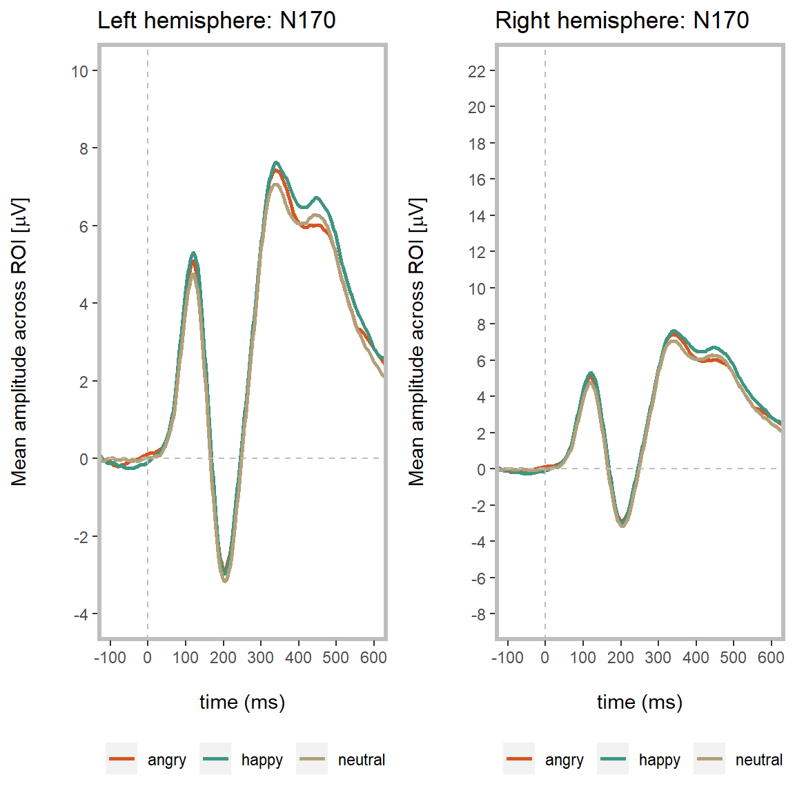
Individual ERPs
if (graph == 1) {
# Plot data
ggplot(P1_P3_traj, aes(time, amplitude)) + theme(panel.background = element_blank(),
panel.border = element_rect(colour = "grey", fill = NA, size = 2), axis.title.y = element_text(margin = margin(t = 0,
r = 20, b = 0, l = 0))) + stat_summary(fun.y = mean, geom = "line", size = 1,
linetype = "solid", aes(colour = cond)) + scale_colour_manual(values = ZE_ERP_col) +
ggtitle("P1 & P3") + theme(legend.position = "bottom") + labs(x = "\ntime (ms)",
y = expression(paste("Mean amplitude across ROI [", mu, "V]")), colour = "") +
coord_cartesian(ylim = c(-10, 20), xlim = c(-100, 600)) + scale_y_continuous(breaks = seq(-10,
20, 10)) + scale_x_continuous(breaks = seq(-100, 600, 300)) + geom_vline(xintercept = 0,
linetype = "dashed", colour = "grey") + geom_hline(yintercept = 0, linetype = "dashed",
colour = "grey") + facet_wrap(~ID, nrow = 25, ncol = 5)
}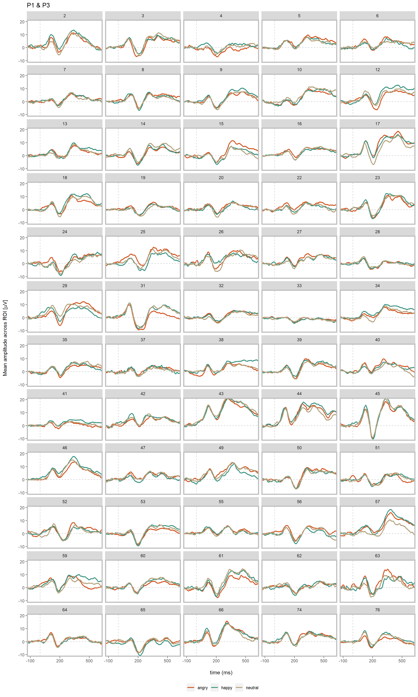
Visualization group differences
Variables
Training vs control group
# Plot differences between training and control group
ggplot(P1_P3_traj, aes(time, amplitude)) + theme(panel.background = element_blank(),
panel.border = element_rect(colour = "grey", fill = NA, size = 2), axis.title.y = element_text(margin = margin(t = 0,
r = 20, b = 0, l = 0))) + stat_summary(fun.y = mean, geom = "line", size = 1.2,
linetype = "solid", aes(colour = cond)) + scale_colour_manual(values = ZE_ERP_col) +
ggtitle("P1 & P3") + theme(legend.position = "bottom") + labs(x = "\ntime (ms)",
y = expression(paste("Mean amplitude across ROI [", mu, "V]")), colour = "") +
coord_cartesian(ylim = c(-3, 8), xlim = c(-100, 600)) + scale_y_continuous(breaks = seq(-3,
8, 2)) + scale_x_continuous(breaks = seq(-100, 600, 200)) + geom_vline(xintercept = 0,
linetype = "dashed", colour = "grey") + geom_hline(yintercept = 0, linetype = "dashed",
colour = "grey") + facet_wrap(~group, ncol = 2)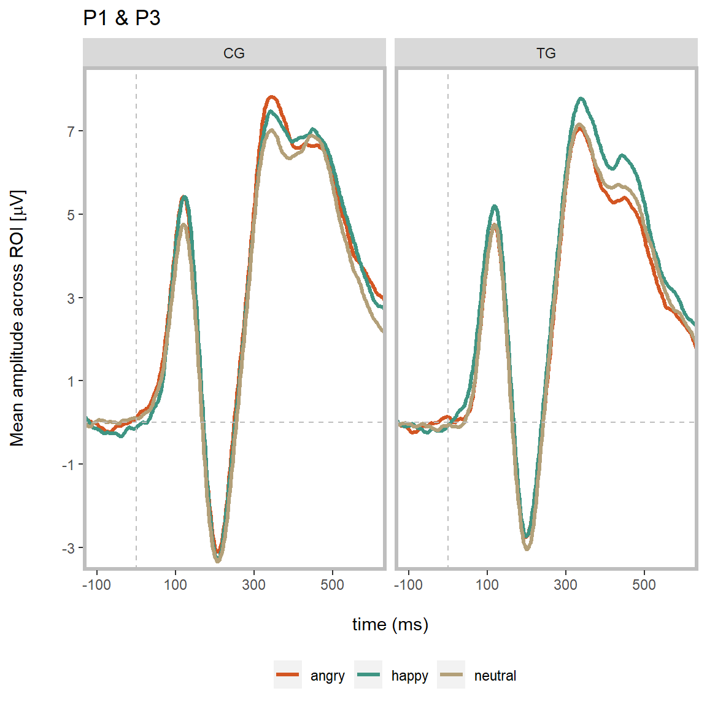
Boxplots amplitude / latency
P1 amplitude
# Draw boxplot
ggplot(P1_amp_emo_neu, aes(x = emotion, y = amplitude, fill = group)) + geom_boxplot(lwd = 0.7) +
labs(x = "", y = "Amplitude [mV]") + scale_x_discrete(labels = c("happy", "neutral",
"angry")) + scale_fill_manual(values = c("#707070", "#c9985f")) + theme_bw()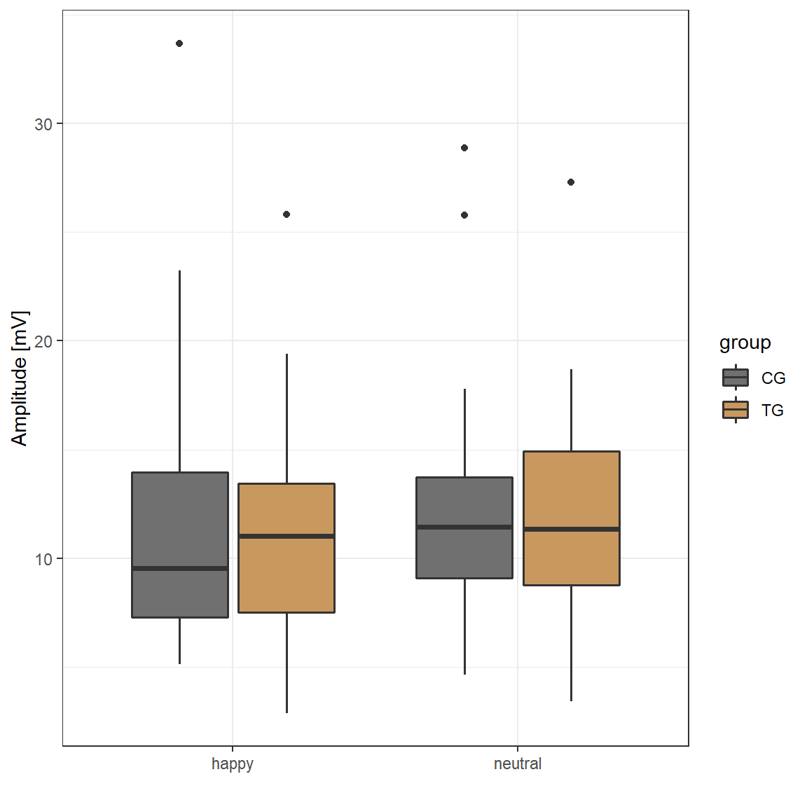
N170 amplitude across hemispheres
# Draw boxplot
ggplot(N170_amp_all_emo, aes(x = emotion, y = amplitude, fill = group)) + geom_boxplot(lwd = 0.7) +
labs(x = "", y = "Amplitude [mV]") + scale_x_discrete(labels = c("happy", "neutral",
"angry")) + scale_fill_manual(values = c("#707070", "#c9985f")) + theme_bw()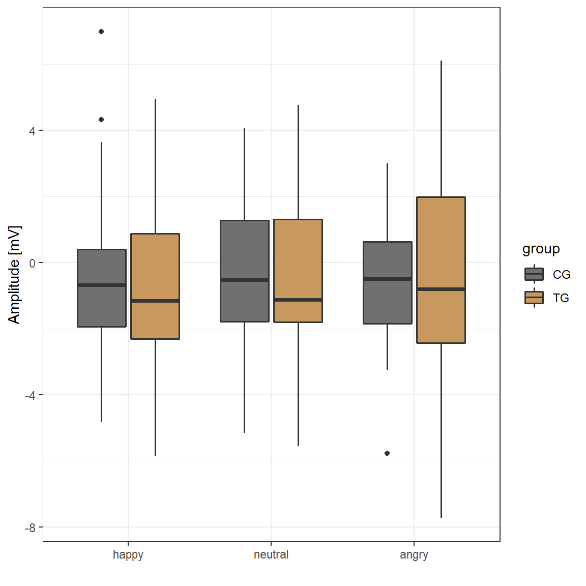
N170 amplitude left vs. right hemisphere
# Draw boxplot
N170_left_amp = ggplot(N170_left_amp_box, aes(x = emotion, y = amplitude, fill = group)) +
geom_boxplot(lwd = 0.7) + labs(x = "", y = "Amplitude [mV]") + scale_x_discrete(labels = c("happy",
"neutral", "angry")) + scale_fill_manual(values = c("#707070", "#c9985f")) +
theme_bw()
# Draw boxplot
N170_right_amp = ggplot(N170_right_amp_box, aes(x = emotion, y = amplitude, fill = group)) +
geom_boxplot(lwd = 0.7) + labs(x = "", y = "Amplitude [mV]") + scale_x_discrete(labels = c("happy",
"neutral", "angry")) + scale_fill_manual(values = c("#707070", "#c9985f")) +
theme_bw()
# Show figures
fig_N170_left_right = cowplot::plot_grid(N170_left_amp, N170_right_amp, ncol = 2,
rel_widths = c(1, 1))
fig_N170_left_right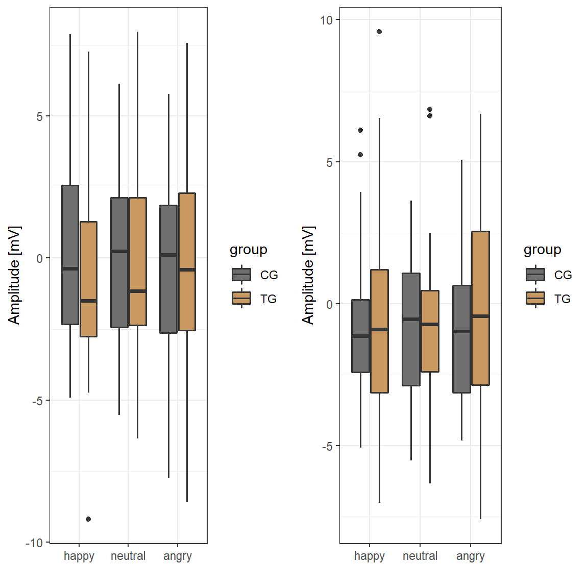
P3 amplitude
# Draw boxplot
ggplot(P3_amp_all_emo, aes(x = emotion, y = amplitude, fill = group)) + geom_boxplot(lwd = 0.7) +
labs(x = "", y = "Amplitude [mV]") + scale_x_discrete(labels = c("happy", "neutral",
"angry")) + scale_fill_manual(values = c("#707070", "#c9985f")) + theme_bw()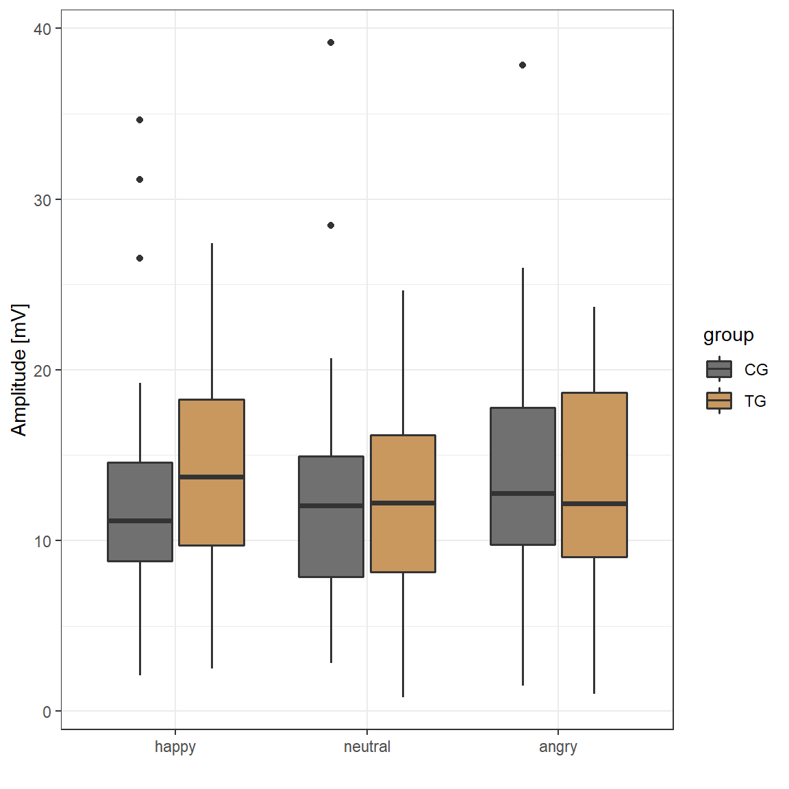
P1 latency
# Draw boxplot
ggplot(P1_lat_box, aes(x = emotion, y = latency, fill = group)) + geom_boxplot(lwd = 0.7) +
labs(x = "", y = "Latency [ms]") + scale_x_discrete(labels = c("happy", "neutral",
"angry")) + scale_fill_manual(values = c("#707070", "#c9985f")) + theme_bw()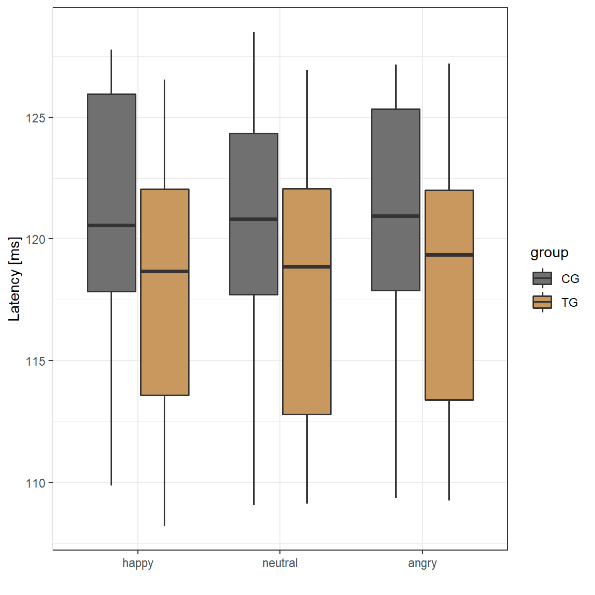
N170 latency
# Draw boxplot
ggplot(N170_lat_box, aes(x = emotion, y = latency, fill = group)) + geom_boxplot(lwd = 0.7) +
labs(x = "", y = "Latency [ms]") + scale_x_discrete(labels = c("happy", "neutral",
"angry")) + scale_fill_manual(values = c("#707070", "#c9985f")) + theme_bw()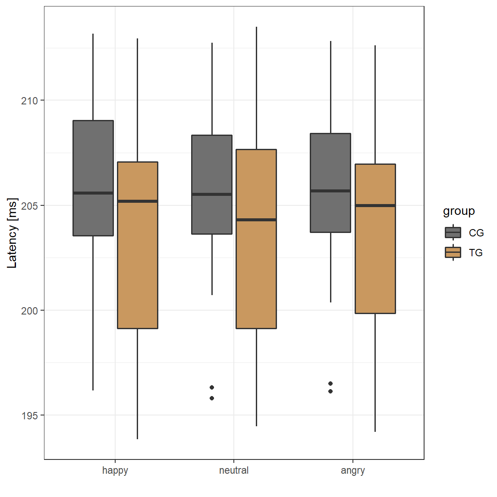
N170 latency left vs. right hemisphere
# Draw boxplot
N170_left_lat = ggplot(N170_left_lat_box, aes(x = emotion, y = latency, fill = group)) +
geom_boxplot(lwd = 0.7) + labs(x = "", y = "latency [ms]") + scale_x_discrete(labels = c("happy",
"neutral", "angry")) + scale_fill_manual(values = c("#707070", "#c9985f")) +
theme_bw()
# Draw boxplot
N170_right_lat = ggplot(N170_right_lat_box, aes(x = emotion, y = latency, fill = group)) +
geom_boxplot(lwd = 0.7) + labs(x = "", y = "latency [ms]") + scale_x_discrete(labels = c("happy",
"neutral", "angry")) + scale_fill_manual(values = c("#707070", "#c9985f")) +
theme_bw()
# Show figures
fig_N170_left_right = cowplot::plot_grid(N170_left_lat, N170_right_lat, ncol = 2,
rel_widths = c(1, 1))
fig_N170_left_right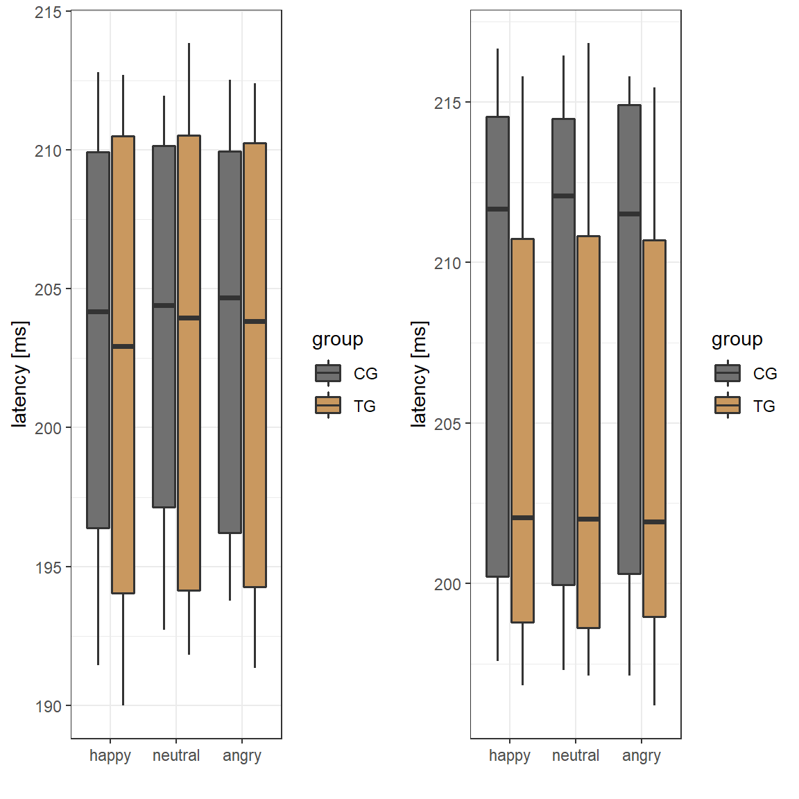
Age
# Plot age differences
ggplot(P1_P3_traj, aes(time, amplitude)) + theme(panel.background = element_blank(),
panel.border = element_rect(colour = "grey", fill = NA, size = 2), axis.title.y = element_text(margin = margin(t = 0,
r = 20, b = 0, l = 0))) + stat_summary(fun.y = mean, geom = "line", size = 1,
linetype = "solid", aes(colour = cond)) + scale_colour_manual(values = ZE_ERP_col) +
ggtitle("P1 & P3") + theme(legend.position = "bottom") + labs(x = "\ntime (ms)",
y = expression(paste("Mean amplitude across ROI [", mu, "V]")), colour = "") +
coord_cartesian(ylim = c(-5, 9), xlim = c(-100, 600)) + scale_y_continuous(breaks = seq(-5,
9, 2)) + scale_x_continuous(breaks = seq(-100, 600, 200)) + geom_vline(xintercept = 0,
linetype = "dashed", colour = "grey") + geom_hline(yintercept = 0, linetype = "dashed",
colour = "grey") + facet_wrap(~age_split, ncol = 2)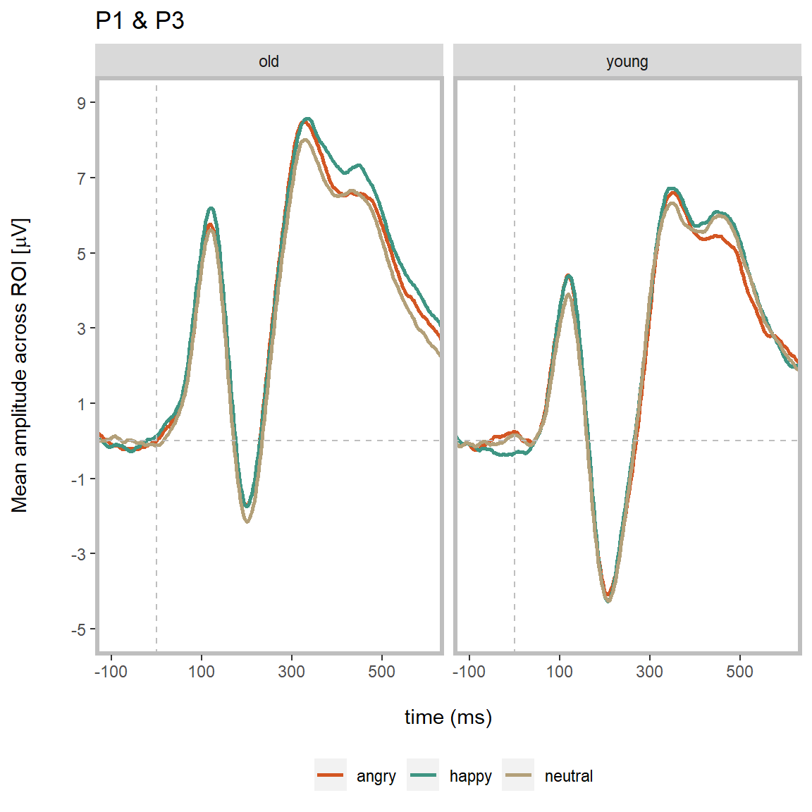
Sex
# Plot sex differences
ggplot(P1_P3_traj, aes(time, amplitude)) + theme(panel.background = element_blank(),
panel.border = element_rect(colour = "grey", fill = NA, size = 2), axis.title.y = element_text(margin = margin(t = 0,
r = 20, b = 0, l = 0))) + stat_summary(fun.y = mean, geom = "line", size = 1,
linetype = "solid", aes(colour = cond)) + scale_colour_manual(values = ZE_ERP_col) +
ggtitle("P1 & P3") + theme(legend.position = "bottom") + labs(x = "\ntime (ms)",
y = expression(paste("Mean amplitude across ROI [", mu, "V]")), colour = "") +
coord_cartesian(ylim = c(-3, 9), xlim = c(-100, 600)) + scale_y_continuous(breaks = seq(-3,
9, 2)) + scale_x_continuous(breaks = seq(-100, 600, 200)) + geom_vline(xintercept = 0,
linetype = "dashed", colour = "grey") + geom_hline(yintercept = 0, linetype = "dashed",
colour = "grey") + facet_wrap(~sex, ncol = 2)
Mean amplitude analyses
ANOVAs
P1 differ between all emotions
P1_amp_all_emo_an = aov_ez("ID", "amplitude", P1_amp_all_emo, between = c("group"),
within = c("emotion") ,
#covariate = c("mc_app_time","mc_CPM"),
#observed = c("mc_app_time","mc_CPM"), factorize = FALSE,
anova_table = list(correction = "none", es = "pes"))
pander(P1_amp_all_emo_an$anova_table)| num Df | den Df | MSE | F | pes | Pr(>F) | |
|---|---|---|---|---|---|---|
| group | 1 | 58 | 76.91 | 0.01858 | 0.0003203 | 0.892 |
| emotion | 2 | 116 | 3.829 | 5.453 | 0.08593 | 0.005455 |
| group:emotion | 2 | 116 | 3.829 | 0.64 | 0.01091 | 0.5291 |
Post-hoc tests
# Display post-hoc test results
pander(P1_amp_ph_res)| contrast | estimate | SE | df | t.ratio | p.value |
|---|---|---|---|---|---|
| P1_amp_hap - P1_amp_neu | 1.162 | 0.3572 | 116 | 3.253 | 0.004246 |
| P1_amp_hap - P1_amp_ang | 0.4043 | 0.3572 | 116 | 1.132 | 0.4967 |
| P1_amp_neu - P1_amp_ang | -0.7577 | 0.3572 | 116 | -2.121 | 0.09003 |
P1 differ between emotional vs. neutral faces
Post-hoc tests
N170 across hemispheres
N170_amp = aov_ez("ID", "amplitude", N170_amp_all_emo, within = c("emotion"), between = c("group"),
# covariate = c("mc_app_time","mc_CPM"),
#observed = c("mc_app_time","mc_CPM"), factorize = FALSE,
anova_table = list(correction = "none", es = "pes"))
pander(N170_amp$anova_table)| num Df | den Df | MSE | F | pes | Pr(>F) | |
|---|---|---|---|---|---|---|
| group | 1 | 58 | 16.02 | 0.0139 | 0.0002395 | 0.9066 |
| emotion | 2 | 116 | 1.968 | 0.3562 | 0.006104 | 0.7011 |
| group:emotion | 2 | 116 | 1.968 | 0.3895 | 0.00667 | 0.6783 |
N170 separated by hemisphere
N170_amp = aov_ez("ID", "amplitude", N170_amp_hem_comp, within = c("emotion_rec","hem"), between = c("group"),
# covariate = c("mc_app_time","mc_CPM"),
#observed = c("mc_app_time","mc_CPM"), factorize = FALSE,
anova_table = list(correction = "none", es = "pes"))
pander(N170_amp$anova_table)| num Df | den Df | MSE | F | pes | Pr(>F) | |
|---|---|---|---|---|---|---|
| group | 1 | 58 | 32.04 | 0.0139 | 0.0002395 | 0.9066 |
| emotion_rec | 2 | 116 | 3.935 | 0.3562 | 0.006104 | 0.7011 |
| group:emotion_rec | 2 | 116 | 3.935 | 0.3895 | 0.00667 | 0.6783 |
| hem | 1 | 58 | 18.16 | 1.627 | 0.02729 | 0.2072 |
| group:hem | 1 | 58 | 18.16 | 0.3653 | 0.00626 | 0.5479 |
| emotion_rec:hem | 2 | 116 | 2.455 | 0.4597 | 0.007864 | 0.6326 |
| group:emotion_rec:hem | 2 | 116 | 2.455 | 0.3521 | 0.006034 | 0.704 |
P3 differ between all emotions
P3_amp_an_all_emo = aov_ez("ID", "amplitude", P3_amp_all_emo, within = c("emotion"), between = c("group"),
# covariate = c("mc_app_time","mc_CPM"),
# observed = c("mc_app_time","mc_CPM"), factorize = FALSE,
anova_table = list(correction = "none", es = "pes"))
pander(P3_amp_an_all_emo$anova_table)| num Df | den Df | MSE | F | pes | Pr(>F) | |
|---|---|---|---|---|---|---|
| group | 1 | 58 | 131.8 | 0.0114 | 0.0001966 | 0.9153 |
| emotion | 2 | 116 | 3.579 | 4.001 | 0.06452 | 0.02089 |
| group:emotion | 2 | 116 | 3.579 | 3.556 | 0.05777 | 0.0317 |
Post-hoc tests
# Display post-hoc test results
pander(P3_amp_ph_all_emo)| contrast | estimate | SE | df | t.ratio | p.value |
|---|---|---|---|---|---|
| P3_amp_hap - P3_amp_neu | 0.9278 | 0.3454 | 116 | 2.686 | 0.0224 |
| P3_amp_hap - P3_amp_ang | 0.1989 | 0.3454 | 116 | 0.5759 | 0.8332 |
| P3_amp_neu - P3_amp_ang | -0.7289 | 0.3454 | 116 | -2.11 | 0.09214 |
# Display post-hoc test results
pander(P3_amp_ph_all_emo)| contrast | emotion | estimate | SE | df | t.ratio | p.value |
|---|---|---|---|---|---|---|
| CG - TG | P3_amp_hap | -1.11 | 1.757 | 64.38 | -0.6319 | 0.5297 |
| CG - TG | P3_amp_neu | -0.17 | 1.757 | 64.38 | -0.09673 | 0.9232 |
| CG - TG | P3_amp_ang | 0.732 | 1.757 | 64.38 | 0.4166 | 0.6783 |
# Display post-hoc test results
pander(P3_amp_ph_all_emo)| contrast | group | estimate | SE | df | t.ratio | p.value |
|---|---|---|---|---|---|---|
| P3_amp_hap - P3_amp_neu | CG | 0.4577 | 0.4885 | 116 | 0.9371 | 0.618 |
| P3_amp_hap - P3_amp_ang | CG | -0.7222 | 0.4885 | 116 | -1.478 | 0.305 |
| P3_amp_neu - P3_amp_ang | CG | -1.18 | 0.4885 | 116 | -2.415 | 0.04518 |
| P3_amp_hap - P3_amp_neu | TG | 1.398 | 0.4885 | 116 | 2.862 | 0.01375 |
| P3_amp_hap - P3_amp_ang | TG | 1.12 | 0.4885 | 116 | 2.293 | 0.06077 |
| P3_amp_neu - P3_amp_ang | TG | -0.2779 | 0.4885 | 116 | -0.569 | 0.8369 |
Calculate separate model for each group
P3_amp_all_emo_TG = subset(P3_amp_all_emo, group == "TG")
P3_amp_an_all_emo = aov_ez("ID", "amplitude", P3_amp_all_emo_TG, within = c("emotion"),
# covariate = c("mc_app_time","mc_CPM"),
# observed = c("mc_app_time","mc_CPM"), factorize = FALSE,
anova_table = list(correction = "none", es = "pes"))
pander(P3_amp_an_all_emo$anova_table)| num Df | den Df | MSE | F | pes | Pr(>F) | |
|---|---|---|---|---|---|---|
| emotion | 2 | 58 | 3.82 | 4.301 | 0.1291 | 0.01813 |
# Do post-hoc test
P3_amp_ph = emmeans(P3_amp_an_all_emo, ~ "emotion")
P3_amp_ph_all_emo = print(pairs(P3_amp_ph))contrast estimate SE df t.ratio p.value P3_amp_hap - P3_amp_neu 1.40 0.5 58 2.770 0.0200 P3_amp_hap - P3_amp_ang 1.12 0.5 58 2.220 0.0800 P3_amp_neu - P3_amp_ang -0.28 0.5 58 -0.550 0.8500
P value adjustment: tukey method for comparing a family of 3 estimates
P3_amp_all_emo_CG = subset(P3_amp_all_emo, group == "CG")
P3_amp_an_all_emo = aov_ez("ID", "amplitude", P3_amp_all_emo_CG, within = c("emotion"),
# covariate = c("mc_app_time","mc_CPM"),
# observed = c("mc_app_time","mc_CPM"), factorize = FALSE,
anova_table = list(correction = "none", es = "pes"))
pander(P3_amp_an_all_emo$anova_table)| num Df | den Df | MSE | F | pes | Pr(>F) | |
|---|---|---|---|---|---|---|
| emotion | 2 | 58 | 3.338 | 3.18 | 0.09883 | 0.04891 |
# Do post-hoc test
P3_amp_ph = emmeans(P3_amp_an_all_emo, ~ "emotion")
P3_amp_ph_all_emo = print(pairs(P3_amp_ph))contrast estimate SE df t.ratio p.value P3_amp_hap - P3_amp_neu 0.46 0.47 58 0.970 0.6000 P3_amp_hap - P3_amp_ang -0.72 0.47 58 -1.530 0.2800 P3_amp_neu - P3_amp_ang -1.18 0.47 58 -2.500 0.0400
P value adjustment: tukey method for comparing a family of 3 estimates
P3 differ between emotional vs. neutral faces
P3_amp_an_emo_neu = aov_ez("ID", "amplitude", P3_amp_emo_neu, within = c("emotion"), between = c("group"),
#covariate = c("mc_app_time","mc_CPM"),
#observed = c("mc_app_time","mc_CPM"), factorize = FALSE,
anova_table = list(correction = "none", es = "pes"))
pander(P3_amp_an_emo_neu$anova_table)| num Df | den Df | MSE | F | pes | Pr(>F) | |
|---|---|---|---|---|---|---|
| group | 1 | 58 | 87.7 | 0.01102 | 0.00019 | 0.9167 |
| emotion | 1 | 58 | 2.371 | 8.683 | 0.1302 | 0.004618 |
| group:emotion | 1 | 58 | 2.371 | 0.001159 | 0.00001998 | 0.973 |
Post-hoc tests
# Display post-hoc test results
pander(P3_amp_ph_emo_neu)| contrast | estimate | SE | df | t.ratio | p.value |
|---|---|---|---|---|---|
| P3_amp_neu - P3_amp_emo | -0.8284 | 0.2811 | 58 | -2.947 | 0.004618 |
LMMs
##### P1
# Convert ID, group & emotion into factor variables
P1_stat$ID = factor(P1_stat$ID)
P1_stat$stim_ID = factor(P1_stat$stim_ID)
# Factor and level emotion
P1_stat$emotion = factor(P1_stat$emotion, levels = c("neutral", "happy", "angry"))
# Factor and level group
P1_stat$group = factor(P1_stat$group, levels = c("CG", "TG"))
# Define effect coding contrast for group and emotion
contrasts(P1_stat$group) = contr.sum(2)/2
contrasts(P1_stat$emotion) = contr.treatment(3)
##### N170
# Convert ID, group & emotion into factor variables
N170_stat$ID = factor(N170_stat$ID)
N170_stat$stim_ID = factor(N170_stat$stim_ID)
N170_stat$group = factor(N170_stat$group)
# Factor and level emotion
N170_stat$emotion = factor(N170_stat$emotion, levels = c("neutral", "happy", "angry"))
# Factor and level group
N170_stat$group = factor(N170_stat$group, levels = c("CG", "TG"))
# Define effect coding contrast for group and emotion
contrasts(N170_stat$group) = contr.sum(2)/2
contrasts(N170_stat$emotion) = contr.treatment(3)
# Re-name and factor hemisphere
N170_stat$hem = factor(N170_stat$hem, levels = c("left", "right"))
contrasts(N170_stat$hem) = contr.sum(2)/2
##### P3
# Convert ID, group & emotion into factor variables
P3_short_stat$ID = factor(P3_short_stat$ID)
P3_short_stat$stim_ID = factor(P3_short_stat$stim_ID)
# Factor and level emotion
P3_short_stat$emotion = factor(P3_short_stat$emotion, levels = c("neutral", "happy",
"angry"))
# Factor and level group
P3_short_stat$group = factor(P3_short_stat$group, levels = c("CG", "TG"))
# Define effect coding contrast for group and emotion
contrasts(P3_short_stat$group) = contr.sum(2)/2
contrasts(P3_short_stat$emotion) = contr.treatment(3)Assumption checks
LMM_P1: Normality of residuals
if (lmm == 1) {
# Visualize normality assumption of residuals
mod_P1 = lm(ROI_GA_amp ~ group * emotion, data = P1_stat)
res.mod_P1 = residuals(mod_P1)
par(mfrow = c(1, 2))
qqpl_mod_P1 = qqPlot(res.mod_P1, main = "QQplot before transformation")
norm_mod_P1 = plot(density(res.mod_P1), main = "Density plot before transformation")
par(mfrow = c(1, 1))
}LMM_P1: Random effect structure
if (lmm == 1) {
# Add contrast columns
mm_P1 = model.matrix(~emotion * group, P1_stat)
# Attach to dataframe
P1_stat[, (ncol(P1_stat) + 1):(ncol(P1_stat) + 6)] = mm_P1
names(P1_stat)[(ncol(P1_stat) - 5):ncol(P1_stat)] = c("Mean", "Neu_Hap", "Neu_Ang",
"Training", "Train_Neu_Hap", "Train_Neu_Ang")
# Build model
mod_P1_lmer1 = lmer(ROI_GA_amp ~ Neu_Hap + Neu_Ang + Training + Train_Neu_Hap +
Train_Neu_Ang + z_app_time + z_age + z_CPM + (1 + Neu_Hap + Neu_Ang + Training +
Train_Neu_Hap + Train_Neu_Ang || ID) + (1 + Neu_Hap + Neu_Ang + Training +
Train_Neu_Hap + Train_Neu_Ang || stim_ID), data = P1_stat, control = lmerControl(calc.derivs = FALSE),
REML = FALSE)
# 1st: check how many zero variance terms you got in random effects
summary(rePCA(mod_P1_lmer1))
# 2nd: check which random terms explain the least variance
print(VarCorr(mod_P1_lmer1), comp = "Variance")
# Build full model
mod_P1_lmer2 = lmer(ROI_GA_amp ~ Neu_Hap + Neu_Ang + Training + Train_Neu_Hap +
Train_Neu_Ang + z_app_time + z_age + z_CPM + (1 + Neu_Ang + Training || ID) +
(1 + Neu_Hap + Neu_Ang + Train_Neu_Ang || stim_ID), data = P1_stat, control = lmerControl(calc.derivs = FALSE),
REML = FALSE)
# Likelihood ratio testing
# For ID
mod_P1_lmer3 = lmer(ROI_GA_amp ~ Neu_Hap + Neu_Ang + Training + Train_Neu_Hap +
Train_Neu_Ang + z_app_time + z_age + z_CPM + (1 | ID) + (1 + Neu_Hap + Neu_Ang +
Train_Neu_Ang || stim_ID), data = P1_stat, control = lmerControl(calc.derivs = FALSE),
REML = FALSE)
anova(mod_P1_lmer2, mod_P1_lmer3)
# For stim_ID
mod_P1_lmer4 = lmer(ROI_GA_amp ~ Neu_Hap + Neu_Ang + Training + Train_Neu_Hap +
Train_Neu_Ang + z_app_time + z_age + z_CPM + (1 + Neu_Ang + Training || ID) +
(1 | stim_ID), data = P1_stat, control = lmerControl(calc.derivs = FALSE),
REML = FALSE)
anova(mod_P1_lmer2, mod_P1_lmer4)
# Final model
mod_P1_lmer5 = lmer(ROI_GA_amp ~ Neu_Hap + Neu_Ang + Training + Train_Neu_Hap +
Train_Neu_Ang + z_app_time + z_age + z_CPM + (1 | ID) + (1 | stim_ID), data = P1_stat,
control = lmerControl(calc.derivs = FALSE), REML = FALSE)
}mod_P1_lmer5 = lmer(ROI_GA_amp ~ Neu_Hap + Neu_Ang + Training + Train_Neu_Hap + Train_Neu_Ang +
(1 | ID) + (1 | stim_ID), data = P1_stat, control = lmerControl(calc.derivs = FALSE),
REML = FALSE)# Create contrast which pools happy/ angry facial expressions
contrasts = cbind(c(0, 0.5, 0.5))
# Build model and add individualized contrast
mod_P1_lmer1 = lmer(ROI_GA_amp ~ emotion * group + z_app_time + z_age + z_CPM + (1 |
ID) + (1 | stim_ID), data = P1_stat, contrasts = list(emotion = contrasts), control = lmerControl(calc.derivs = FALSE),
REML = FALSE)
tab_model(mod_P1_lmer1)LMM_P1: Homoscedasticity
if (lmm == 1) {
# Whether residuals are equally distributed along regression line
plot(fitted(mod_P1_lmer5), residuals(mod_P1_lmer5))
abline(0, 0)
}LMM_N170: Normality of residuals
if (lmm == 1) {
# Visualize normality assumption of residuals
mod_N170 = lm(ROI_GA_amp ~ group * emotion, data = N170_stat)
res.mod_N170 = residuals(mod_N170)
par(mfrow = c(1, 2))
qqpl_mod_N170 = qqPlot(res.mod_N170, main = "QQplot before transformation")
norm_mod_N170 = plot(density(res.mod_N170), main = "Density plot before transformation")
par(mfrow = c(1, 1))
}LMM_N170: Random effect structure
if (lmm == 1) {
# Add contrast columns
mm_N170 = model.matrix(~emotion * group + hem, N170_stat)
# Attach to dataframe
N170_stat[, (ncol(N170_stat) + 1):(ncol(N170_stat) + 7)] = mm_N170
names(N170_stat)[(ncol(N170_stat) - 6):ncol(N170_stat)] = c("Mean", "Neu_Hap",
"Neu_Ang", "LvR", "Training", "Train_Neu_Hap", "Train_Neu_Ang")
# Build model
mod_N170_lmer1 = lmer(ROI_GA_amp ~ Neu_Hap + Neu_Ang + LvR + Training + Train_Neu_Hap +
Train_Neu_Ang + z_app_time + z_age + z_CPM + (1 + Neu_Hap + Neu_Ang + LvR +
Training + Train_Neu_Hap + Train_Neu_Ang || ID) + (1 + Neu_Hap + Neu_Ang +
LvR + Training + Train_Neu_Hap + Train_Neu_Ang || stim_ID), data = N170_stat,
control = lmerControl(calc.derivs = FALSE), REML = FALSE)
# 1st: check how many zero variance terms you got in random effects
summary(rePCA(mod_N170_lmer1))
# 2nd: check which random terms explain the least variance
print(VarCorr(mod_N170_lmer1), comp = "Variance")
# Build model
mod_N170_lmer2 = lmer(ROI_GA_amp ~ Neu_Hap + Neu_Ang + LvR + Training + Train_Neu_Hap +
Train_Neu_Ang + z_app_time + z_age + z_CPM + (0 + LvR + Training + Train_Neu_Ang ||
ID) + (0 + Neu_Hap + Neu_Ang + LvR + Train_Neu_Hap + Train_Neu_Ang || stim_ID),
data = N170_stat, control = lmerControl(calc.derivs = FALSE), REML = FALSE)
# Likelihood ratio testing
# For ID
mod_N170_lmer3 = lmer(ROI_GA_amp ~ Neu_Hap + Neu_Ang + LvR + Training + Train_Neu_Hap +
Train_Neu_Ang + z_app_time + z_age + z_CPM + (1 | ID) + (0 + Neu_Hap + Neu_Ang +
LvR + Train_Neu_Hap + Train_Neu_Ang || stim_ID), data = N170_stat, control = lmerControl(calc.derivs = FALSE),
REML = FALSE)
anova(mod_N170_lmer2, mod_N170_lmer3)
# For stim_ID
mod_N170_lmer4 = lmer(ROI_GA_amp ~ Neu_Hap + Neu_Ang + LvR + Training + Train_Neu_Hap +
Train_Neu_Ang + z_app_time + z_age + z_CPM + (0 + LvR + Training + Train_Neu_Ang ||
ID) + (1 | stim_ID), data = N170_stat, control = lmerControl(calc.derivs = FALSE),
REML = FALSE)
anova(mod_N170_lmer2, mod_N170_lmer4)
# Final model
mod_N170_lmer5 = lmer(ROI_GA_amp ~ Neu_Hap + Neu_Ang + LvR + Training + Train_Neu_Hap +
Train_Neu_Ang + z_app_time + z_age + z_CPM + (0 + LvR + Training + Train_Neu_Ang ||
ID) + (0 + Neu_Hap + Neu_Ang + LvR + Train_Neu_Hap + Train_Neu_Ang || stim_ID),
data = N170_stat, control = lmerControl(calc.derivs = FALSE), REML = FALSE)
}LMM_N170: Homoscedasticity
if (lmm == 1) {
# Whether residuals are equally distributed along regression line
plot(fitted(mod_N170_lmer5), residuals(mod_N170_lmer5))
abline(0, 0)
}LMM_P3: Normality of residuals
if (lmm == 1) {
# Visualize normality assumption of residuals
mod_P3 = lm(ROI_GA_amp ~ group * emotion, data = P3_short_stat)
res.mod_P3 = residuals(mod_P3)
par(mfrow = c(1, 2))
qqpl_mod_P3 = qqPlot(res.mod_P3, main = "QQplot before transformation")
norm_mod_P3 = plot(density(res.mod_P3), main = "Density plot before transformation")
par(mfrow = c(1, 1))
}LMM_P3: Random effect structure
if (lmm == 1) {
# Add contrast columns
mm_P3 = model.matrix(~emotion * group, P3_short_stat)
# Attach to dataframe
P3_short_stat[, (ncol(P3_short_stat) + 1):(ncol(P3_short_stat) + 6)] = mm_P3
names(P3_short_stat)[(ncol(P3_short_stat) - 5):ncol(P3_short_stat)] = c("Mean",
"Neu_Hap", "Neu_Ang", "Training", "Train_Neu_Hap", "Train_Neu_Ang")
# Build model
mod_P3_lmer1 = lmer(ROI_GA_amp ~ Neu_Hap + Neu_Ang + Training + Train_Neu_Hap +
Train_Neu_Ang + z_app_time + z_age + z_CPM + (1 + Neu_Hap + Neu_Ang + Training +
Train_Neu_Hap + Train_Neu_Ang || ID) + (1 + Neu_Hap + Neu_Ang + Training +
Train_Neu_Hap + Train_Neu_Ang || stim_ID), data = P3_short_stat, control = lmerControl(calc.derivs = FALSE),
REML = FALSE)
# 1st: check how many zero variance terms you got in random effects
summary(rePCA(mod_P3_lmer1))
# 2nd: check which random terms explain the least variance
print(VarCorr(mod_P3_lmer1), comp = "Variance")
# Build model
mod_P3_lmer2 = lmer(ROI_GA_amp ~ Neu_Hap + Neu_Ang + Training + Train_Neu_Hap +
Train_Neu_Ang + z_app_time + z_age + z_CPM + (1 + Training || ID) + (1 +
Neu_Hap + Neu_Ang + Training + Train_Neu_Hap || stim_ID), data = P3_short_stat,
control = lmerControl(calc.derivs = FALSE), REML = FALSE)
# Likelihood ratio testing
# For ID
mod_P3_lmer3 = lmer(ROI_GA_amp ~ Neu_Hap + Neu_Ang + Training + Train_Neu_Hap +
Train_Neu_Ang + z_app_time + z_age + z_CPM + (1 | ID) + (1 + Neu_Hap + Neu_Ang +
Training + Train_Neu_Hap || stim_ID), data = P3_short_stat, control = lmerControl(calc.derivs = FALSE),
REML = FALSE)
anova(mod_P3_lmer2, mod_P3_lmer3)
# For stim_ID
mod_P3_lmer4 = lmer(ROI_GA_amp ~ Neu_Hap + Neu_Ang + Training + Train_Neu_Hap +
Train_Neu_Ang + z_app_time + z_age + z_CPM + (1 + Training || ID) + (1 |
stim_ID), data = P3_short_stat, control = lmerControl(calc.derivs = FALSE),
REML = FALSE)
anova(mod_P3_lmer2, mod_P3_lmer4)
# Final model
mod_P3_lmer5 = lmer(ROI_GA_amp ~ Neu_Hap + Neu_Ang + Training + Train_Neu_Hap +
Train_Neu_Ang + z_app_time + z_age + z_CPM + (1 | ID) + (1 + Neu_Hap + Neu_Ang +
Training + Train_Neu_Hap || stim_ID), data = P3_short_stat, control = lmerControl(calc.derivs = FALSE),
REML = FALSE)
}LMM_P3: Homoscedasticity
if (lmm == 1) {
# Whether residuals are equally distributed along regression line
plot(fitted(mod_P3_lmer5), residuals(mod_P3_lmer5))
abline(0, 0)
}Results
if (lmm == 1) {
# Create table
tab_model(mod_P1_lmer5, mod_N170_lmer5, mod_P3_lmer5,
#pred.labels=labels,
show.se=TRUE, show.stat=TRUE, show.ci = FALSE, string.se = "SE",
show.re.var=FALSE, show.obs=FALSE,
emph.p = TRUE, dv.labels=c("P1 Amplitudes","N170 Amplitudes","P3 Amplitudes"),
show.icc = FALSE)
}P3 - Different time windows
LMM_300_400_RES
if (lmm == 1) {
# Convert ID, group & emotion into factor variables
P3_short_stat$ID = factor(P3_short_stat$ID)
P3_short_stat$stim_ID = factor(P3_short_stat$stim_ID)
# Factor and level emotion
P3_short_stat$emotion = factor(P3_short_stat$emotion, levels = c("neutral", "happy",
"angry"))
# Factor and level group
P3_short_stat$group = factor(P3_short_stat$group, levels = c("CG", "TG"))
# Define effect coding contrast for group and emotion
contrasts(P3_short_stat$group) = contr.sum(2)/2
contrasts(P3_short_stat$emotion) = contr.treatment(3)
# Add contrast columns
mm_P3 = model.matrix(~emotion * group, P3_short_stat)
# Attach to dataframe
P3_short_stat[, (ncol(P3_short_stat) + 1):(ncol(P3_short_stat) + 6)] = mm_P3
names(P3_short_stat)[(ncol(P3_short_stat) - 5):ncol(P3_short_stat)] = c("Mean",
"Neu_Hap", "Neu_Ang", "Training", "Train_Neu_Hap", "Train_Neu_Ang")
# Build model
mod_P3_short_lmer1 = lmer(ROI_GA_amp ~ Neu_Hap + Neu_Ang + Training + Train_Neu_Hap +
Train_Neu_Ang + z_app_time + z_age + z_CPM + (1 + Neu_Hap + Neu_Ang + Training +
Train_Neu_Hap + Train_Neu_Ang || ID) + (1 + Neu_Hap + Neu_Ang + Training +
Train_Neu_Hap + Train_Neu_Ang || stim_ID), data = P3_short_stat, control = lmerControl(calc.derivs = FALSE),
REML = FALSE)
# 1st: check how many zero variance terms you got in random effects
summary(rePCA(mod_P3_short_lmer1))
# 2nd: check which random terms explain the least variance
print(VarCorr(mod_P3_short_lmer1), comp = "Variance")
# Build model
mod_P3_short_lmer2 = lmer(ROI_GA_amp ~ Neu_Hap + Neu_Ang + Training + Train_Neu_Hap +
Train_Neu_Ang + z_app_time + z_age + z_CPM + (1 + Training || ID) + (1 +
Neu_Hap + Neu_Ang + Training + Train_Neu_Hap || stim_ID), data = P3_short_stat,
control = lmerControl(calc.derivs = FALSE), REML = FALSE)
# Likelihood ratio testing
# For ID
mod_P3_short_lmer3 = lmer(ROI_GA_amp ~ Neu_Hap + Neu_Ang + Training + Train_Neu_Hap +
Train_Neu_Ang + z_app_time + z_age + z_CPM + (1 | ID) + (1 + Neu_Hap + Neu_Ang +
Training + Train_Neu_Hap || stim_ID), data = P3_short_stat, control = lmerControl(calc.derivs = FALSE),
REML = FALSE)
anova(mod_P3_short_lmer2, mod_P3_short_lmer3)
# For stim_ID
mod_P3_short_lmer4 = lmer(ROI_GA_amp ~ Neu_Hap + Neu_Ang + Training + Train_Neu_Hap +
Train_Neu_Ang + z_app_time + z_age + z_CPM + (1 + Training || ID) + (1 |
stim_ID), data = P3_short_stat, control = lmerControl(calc.derivs = FALSE),
REML = FALSE)
anova(mod_P3_short_lmer2, mod_P3_short_lmer4)
# Final model
mod_P3_short_lmer5 = lmer(ROI_GA_amp ~ Neu_Hap + Neu_Ang + Training + Train_Neu_Hap +
Train_Neu_Ang + z_app_time + z_age + z_CPM + (1 | ID) + (1 + Neu_Hap + Neu_Ang +
Training + Train_Neu_Hap || stim_ID), data = P3_short_stat, control = lmerControl(calc.derivs = FALSE),
REML = FALSE)
}LMM_300_500_RES
if (lmm == 1) {
# Convert ID, group & emotion into factor variables
P3_medium_stat$ID = factor(P3_medium_stat$ID)
P3_medium_stat$stim_ID = factor(P3_medium_stat$stim_ID)
# Factor and level emotion
P3_medium_stat$emotion = factor(P3_medium_stat$emotion, levels = c("neutral",
"happy", "angry"))
# Factor and level group
P3_medium_stat$group = factor(P3_medium_stat$group, levels = c("CG", "TG"))
# Define effect coding contrast for group and emotion
contrasts(P3_medium_stat$group) = contr.sum(2)/2
contrasts(P3_medium_stat$emotion) = contr.treatment(3)
# Add contrast columns
mm_P3 = model.matrix(~emotion * group, P3_medium_stat)
# Attach to dataframe
P3_medium_stat[, (ncol(P3_medium_stat) + 1):(ncol(P3_medium_stat) + 6)] = mm_P3
names(P3_medium_stat)[(ncol(P3_medium_stat) - 5):ncol(P3_medium_stat)] = c("Mean",
"Neu_Hap", "Neu_Ang", "Training", "Train_Neu_Hap", "Train_Neu_Ang")
# Build model
mod_P3_medium_lmer1 = lmer(ROI_GA_amp ~ Neu_Hap + Neu_Ang + Training + Train_Neu_Hap +
Train_Neu_Ang + z_app_time + z_age + z_CPM + (1 + Neu_Hap + Neu_Ang + Training +
Train_Neu_Hap + Train_Neu_Ang || ID) + (1 + Neu_Hap + Neu_Ang + Training +
Train_Neu_Hap + Train_Neu_Ang || stim_ID), data = P3_medium_stat, control = lmerControl(calc.derivs = FALSE),
REML = FALSE)
# 1st: check how many zero variance terms you got in random effects
summary(rePCA(mod_P3_medium_lmer1))
# 2nd: check which random terms explain the least variance
print(VarCorr(mod_P3_medium_lmer1), comp = "Variance")
# Build model
mod_P3_medium_lmer2 = lmer(ROI_GA_amp ~ Neu_Hap + Neu_Ang + Training + Train_Neu_Hap +
Train_Neu_Ang + z_app_time + z_age + z_CPM + (1 + Training || ID) + (1 +
Neu_Hap + Neu_Ang + Training + Train_Neu_Hap || stim_ID), data = P3_medium_stat,
control = lmerControl(calc.derivs = FALSE), REML = FALSE)
# Likelihood ratio testing
# For ID
mod_P3_medium_lmer3 = lmer(ROI_GA_amp ~ Neu_Hap + Neu_Ang + Training + Train_Neu_Hap +
Train_Neu_Ang + z_app_time + z_age + z_CPM + (1 | ID) + (1 + Neu_Hap + Neu_Ang +
Training + Train_Neu_Hap || stim_ID), data = P3_medium_stat, control = lmerControl(calc.derivs = FALSE),
REML = FALSE)
anova(mod_P3_medium_lmer2, mod_P3_medium_lmer3)
# For stim_ID
mod_P3_medium_lmer4 = lmer(ROI_GA_amp ~ Neu_Hap + Neu_Ang + Training + Train_Neu_Hap +
Train_Neu_Ang + z_app_time + z_age + z_CPM + (1 + Training || ID) + (1 |
stim_ID), data = P3_medium_stat, control = lmerControl(calc.derivs = FALSE),
REML = FALSE)
anova(mod_P3_medium_lmer2, mod_P3_medium_lmer4)
# Final model
mod_P3_medium_lmer5 = lmer(ROI_GA_amp ~ Neu_Hap + Neu_Ang + Training + Train_Neu_Hap +
Train_Neu_Ang + z_app_time + z_age + z_CPM + (1 | ID) + (1 + Neu_Hap + Neu_Ang +
Training + Train_Neu_Hap || stim_ID), data = P3_medium_stat, control = lmerControl(calc.derivs = FALSE),
REML = FALSE)
}LMM_300_600_RES
if (lmm == 1) {
# Convert ID, group & emotion into factor variables
P3_long_stat$ID = factor(P3_long_stat$ID)
P3_long_stat$stim_ID = factor(P3_long_stat$stim_ID)
# Factor and level emotion
P3_long_stat$emotion = factor(P3_long_stat$emotion, levels = c("neutral", "happy",
"angry"))
# Factor and level group
P3_long_stat$group = factor(P3_long_stat$group, levels = c("CG", "TG"))
# Define effect coding contrast for group and emotion
contrasts(P3_long_stat$group) = contr.sum(2)/2
contrasts(P3_long_stat$emotion) = contr.treatment(3)
# Add contrast columns
mm_P3 = model.matrix(~emotion * group, P3_long_stat)
# Attach to dataframe
P3_long_stat[, (ncol(P3_long_stat) + 1):(ncol(P3_long_stat) + 6)] = mm_P3
names(P3_long_stat)[(ncol(P3_long_stat) - 5):ncol(P3_long_stat)] = c("Mean",
"Neu_Hap", "Neu_Ang", "Training", "Train_Neu_Hap", "Train_Neu_Ang")
# Build model
mod_P3_long_lmer1 = lmer(ROI_GA_amp ~ Neu_Hap + Neu_Ang + Training + Train_Neu_Hap +
Train_Neu_Ang + z_app_time + z_age + z_CPM + (1 + Neu_Hap + Neu_Ang + Training +
Train_Neu_Hap + Train_Neu_Ang || ID) + (1 + Neu_Hap + Neu_Ang + Training +
Train_Neu_Hap + Train_Neu_Ang || stim_ID), data = P3_long_stat, control = lmerControl(calc.derivs = FALSE),
REML = FALSE)
# 1st: check how many zero variance terms you got in random effects
summary(rePCA(mod_P3_long_lmer1))
# 2nd: check which random terms explain the least variance
print(VarCorr(mod_P3_long_lmer1), comp = "Variance")
# Build model
mod_P3_long_lmer2 = lmer(ROI_GA_amp ~ Neu_Hap + Neu_Ang + Training + Train_Neu_Hap +
Train_Neu_Ang + z_app_time + z_age + z_CPM + (1 + Training || ID) + (1 +
Neu_Hap + Neu_Ang + Training + Train_Neu_Hap || stim_ID), data = P3_long_stat,
control = lmerControl(calc.derivs = FALSE), REML = FALSE)
# Likelihood ratio testing
# For ID
mod_P3_long_lmer3 = lmer(ROI_GA_amp ~ Neu_Hap + Neu_Ang + Training + Train_Neu_Hap +
Train_Neu_Ang + z_app_time + z_age + z_CPM + (1 | ID) + (1 + Neu_Hap + Neu_Ang +
Training + Train_Neu_Hap || stim_ID), data = P3_long_stat, control = lmerControl(calc.derivs = FALSE),
REML = FALSE)
anova(mod_P3_long_lmer2, mod_P3_long_lmer3)
# For stim_ID
mod_P3_long_lmer4 = lmer(ROI_GA_amp ~ Neu_Hap + Neu_Ang + Training + Train_Neu_Hap +
Train_Neu_Ang + z_app_time + z_age + z_CPM + (1 + Training || ID) + (1 |
stim_ID), data = P3_long_stat, control = lmerControl(calc.derivs = FALSE),
REML = FALSE)
anova(mod_P3_long_lmer2, mod_P3_long_lmer4)
# Final model
mod_P3_long_lmer5 = lmer(ROI_GA_amp ~ Neu_Hap + Neu_Ang + Training + Train_Neu_Hap +
Train_Neu_Ang + z_app_time + z_age + z_CPM + (1 | ID) + (1 + Neu_Hap + Neu_Ang +
Training + Train_Neu_Hap || stim_ID), data = P3_long_stat, control = lmerControl(calc.derivs = FALSE),
REML = FALSE)
}Results
if (lmm == 1) {
# Create table
tab_model(mod_P3_short_lmer5, mod_P3_medium_lmer5, mod_P3_long_lmer5,
#pred.labels=labels,
show.se=TRUE, show.stat=TRUE, show.ci = FALSE, string.se = "SE",
show.re.var=FALSE, show.obs=FALSE,
emph.p = TRUE, dv.labels=c("P3: 300-400 ms","P3: 300-500 ms","P3: 300-600 ms"),
show.icc = FALSE)
}